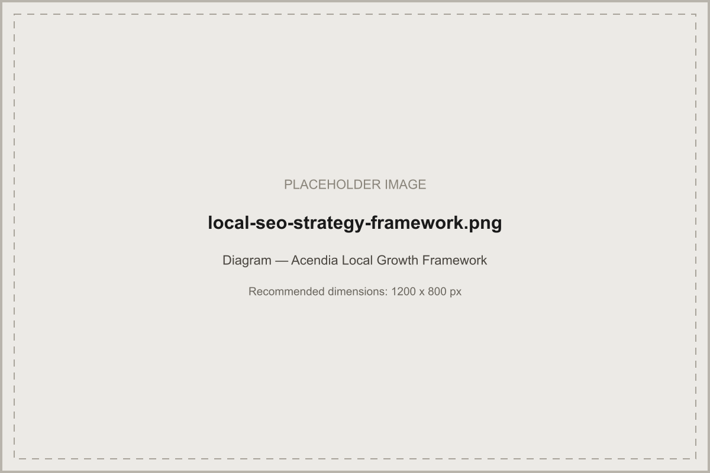
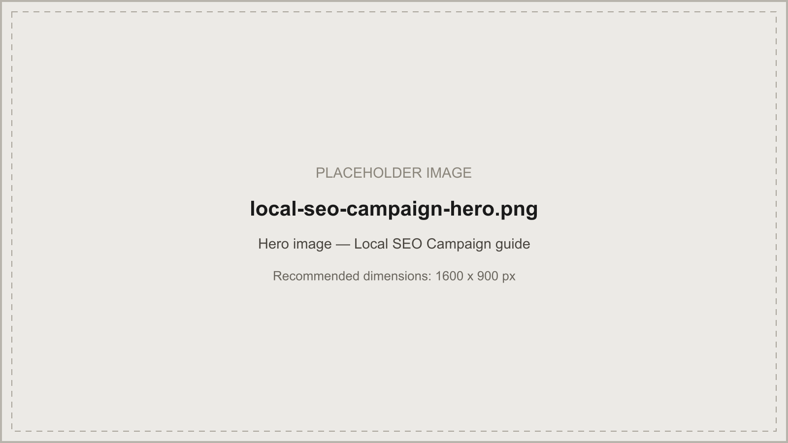
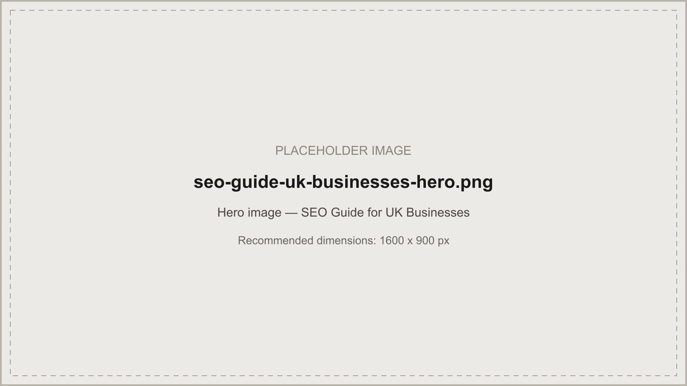

The complete framework — Google Business Profile, location pages, citations, reviews, and authority — for businesses that want to win the Local Pack, not just claim a listing.
In short: a local SEO strategy is a coordinated plan across Google Business Profile, website and location-page architecture, citation consistency, review acquisition, and local authority-building — sequenced so each part reinforces the others rather than running as isolated tactics. It's a different discipline from national SEO, weighted more heavily toward proximity, relevance, and prominence signals than toward pure content and backlink volume.
A local SEO strategy is a structured, ongoing plan to improve how a business appears in Google Maps results, the Local Pack, and local organic search for a defined geographic area — a city, region, suburb, or set of service areas. It's not a single tactic. Claiming a Google Business Profile listing isn't a strategy any more than publishing one blog post is a content strategy. A genuine local SEO strategy coordinates several components — profile optimisation, on-site architecture, citations, reviews, and local authority — so they reinforce each other instead of operating in isolation.
This guide is deliberately written to serve both "local SEO strategy" and "local SEO strategies" as the same search intent. Businesses searching either phrase are looking for the same thing: a workable plan, not a dictionary definition. Splitting that into two competing pages would only dilute both.
Any business where customers search with location intent — "near me," a suburb name, or "[service] in [city]" — benefits from a deliberate local SEO strategy. That includes single-location businesses with a physical storefront, multi-location businesses managing several profiles at once, and service-area businesses that travel to customers without a public address. It applies less directly to purely national or global businesses with no geographic component to their customer base — those businesses are usually better served by our SEO agency UK or national SEO services instead.
Traditional (national) SEO and local SEO share the same underlying search engine, but Google weighs different signals for each. Traditional SEO leans heavily on content depth, topical authority, and a broad backlink profile. Local SEO adds proximity, Google Business Profile signals, citation consistency, and review velocity into the mix — and for many local queries, those local signals matter more than a page's raw content quality.
| Traditional / National SEO | Local SEO | |
|---|---|---|
| Primary ranking factors | Content depth, topical authority, backlink profile | Proximity, Google Business Profile, citations, reviews, relevance |
| Typical search format | Standard organic results | Local Pack / Map Pack plus local organic beneath it |
| Core asset | The website and its content | Google Business Profile, supported by the website |
| Competitive set | National or global competitors | Businesses genuinely nearby or serving the same area |
We organise every local SEO engagement around four stages. Each stage builds on the last — skipping ahead to reviews or link building before the foundation is solid usually wastes effort, because the signals it's meant to reinforce aren't there yet to reinforce.
| Stage | Focus | Core components |
|---|---|---|
| 1. Foundation | Get the basics genuinely correct | Google Business Profile setup and category accuracy, technical site health, NAP consistency |
| 2. Visibility | Make the business findable for real local searches | Location-page architecture, service and location keyword mapping, local content |
| 3. Proof | Build the trust signals Google and customers both check | Review acquisition, citation depth, local backlinks and digital PR |
| 4. Performance | Measure and iterate against real outcomes | Conversion tracking, Local Pack and organic reporting, ongoing refinement |

The sections below walk through each component in detail, in roughly the order the framework recommends tackling them.
For most local businesses, Google Business Profile is the single highest-leverage asset in the entire strategy — often more decisive than the website itself for Local Pack visibility. Get the primary category right first: it should be the single most accurate description of the core business, not a broader category chosen to appear in more searches, which usually dilutes relevance for the category that actually matters. Secondary categories should be genuinely applicable, not a wish list.
Beyond category selection, an actively maintained profile earns more visibility than a static one: regular photo uploads, weekly posts, a complete and current Q&A section, and services or product listings that match what the website says. Keep opening hours accurate through holidays — an inaccurate schedule can trigger a "permanently closed" flag that silently kills visibility. Service-area businesses without a public storefront should hide their address and define service areas precisely, since an overly broad service area dilutes relevance for every individual area within it.
A location page that only repeats an address and phone number does almost nothing for rankings. What works is a genuinely distinct page per location that reflects real local knowledge — the specific areas served, locally relevant content, and internal links back to a central hub rather than existing as an orphaned page. For businesses covering many suburbs or towns, build dedicated pages for the handful that generate real demand, and roll the long tail of smaller surrounding areas into a single well-written regional page that still names them explicitly rather than ignoring them.
Map every combination of service and location to exactly one page before publishing anything. A plumbing business offering emergency repairs, installations, and maintenance across three suburbs needs a clear map of which page owns which combination — otherwise pages compete against each other and Google has to guess which one to rank, which usually means neither ranks as well as a single, clearly-targeted page would. Build this map as a simple spreadsheet before writing a single page: service, location, target page, primary keyword.
Beyond location pages, local content includes area-specific guides, locally relevant FAQs, and genuinely useful resources that reflect real knowledge of the area — not a generic template with the place name swapped in. A "cost of [service] in [city]" breakdown or a locally-focused how-to guide gives both search engines and real readers a reason to see the page as genuinely local, and gives journalists and local publications a reason to link to it.
Reviews work best as an ongoing system, not a one-time push. A steady stream of new reviews — through automated requests after every completed job — looks natural to both Google and prospective customers; a burst followed by silence doesn't. Review velocity, recency, and rating all factor into ranking, and responding to every review, positive and negative, signals an actively managed business. Never selectively ask only happy customers for reviews while filtering out unhappy ones — Google's guidelines explicitly prohibit this practice (known as review gating), and platforms increasingly detect it.
Citations are mentions of your business name, address, and phone number across directories and industry sites. The goal is consistency, not volume — a handful of accurate, relevant citations outperforms a hundred inconsistent ones. Start with the data aggregators feeding secondary directories, then prioritise citations customers genuinely use: industry-specific directories, chamber of commerce listings, and region-specific business directories. Audit citations at least twice a year; drift (an old suite number, a disconnected phone line still listed somewhere) quietly erodes the trust signal citations are meant to build.
Local backlinks carry outsized relevance weight compared to generic ones. Sponsoring a local team or event, being covered by local press, partnering with complementary local businesses, and joining trade or chamber directories all build a geographically-relevant link profile that's genuinely hard for less locally-embedded competitors to replicate. A locally-focused, genuinely useful resource — like the cost or how-to content mentioned above — pairs naturally with digital PR outreach to local journalists and bloggers.
LocalBusiness schema with an accurate address and areaServed field reinforces the same local signals your Google Business Profile and website content already send, and Organisation schema ties everything back to a single, consistent business entity. The critical rule: structured data must exactly match what's visibly on the page. Never add an address, review rating, or service area to schema that isn't genuinely accurate and visible — mismatched schema can create trust problems with Google rather than helping.
Confirm that form submissions, calls, and bookings are actually being tracked, not just technically installed. Call tracking numbers on Google Business Profile and location pages attribute phone enquiries back to the specific channel and page that generated them — something a standard analytics setup usually can't see on its own, and often the majority of enquiries for service businesses that rely heavily on phone contact.
Track these as two separate metrics. A business can rank well in the Local Pack's three-listing map result while ranking poorly in the organic results beneath it, or vice versa — and the fixes for each differ. Local Pack ranking leans more heavily on Google Business Profile signals and proximity; organic ranking leans more on the website's own content and authority. Reporting only a single blended position hides which lever actually needs attention.
The mechanics are identical — the details worth adjusting for each market are not.
| United Kingdom | Australia | |
|---|---|---|
| Market density | High competition in major cities; regional towns often less contested | Concentrated competition in capital cities; regional and rural areas often more winnable |
| Citation landscape | UK-specific directories and industry bodies carry local relevance | Australian directories and state-based business bodies carry local relevance |
| Language conventions | British English spelling and terminology in content and metadata | Australian English spelling and terminology in content and metadata |
| Service-area norms | Multi-town coverage common for trades and professional services | Wider geographic service areas common given lower population density outside capitals |
See our SEO agency Bondi page for an example of a genuinely localised Australian implementation, and our SEO guide for UK businesses for the UK-specific version of this same thinking applied more broadly.
A local SEO strategy is a coordinated plan for improving how a business appears in Google Maps, the Local Pack, and local organic results for a defined geographic area. It typically combines Google Business Profile optimisation, location-specific content, citation consistency, review acquisition, and local link building, rather than treating any one of these as a standalone tactic.
Not in any meaningful way. Both phrases describe the same underlying discipline — a coordinated set of tactics to improve local visibility. This guide treats them as the same topic rather than splitting them across separate pages, which would only compete against itself in search results.
The core mechanics are the same, but implementation details differ — citation sources, review platform habits, and competitive density vary between UK and Australian markets. See the UK versus Australia section above for the practical differences.
It depends on competition, starting point, and how much foundational work is needed first. Some businesses see Local Pack movement within weeks of fixing basic Google Business Profile issues; more competitive markets and service areas take longer. We avoid giving a fixed timeframe because too many variables affect it for a guarantee to be credible.
A website strengthens local SEO considerably — it supports location pages, structured data, and content that Google Business Profile alone can't carry — but Google Business Profile can still generate visibility on its own, particularly for service-area businesses without a public storefront.
This page defines what a complete local SEO strategy should contain — the components and framework. Our local SEO campaign guide explains how to actually plan, sequence, and execute that strategy as a structured, time-bound campaign with deliverables and reporting.
Cost depends on how many locations or service areas you cover, how much existing foundational work is already in place, and how competitive your market is. Rather than inventing a fixed figure here, see our SEO costs guide for the factors that genuinely drive pricing.
Get a free local SEO audit and see exactly where you stand against local competitors.
Request a Free Local SEO Audit →
Turn this strategy into an executable, time-bound campaign.

SEO, Maps, reviews, and paid — the complete acquisition picture.

A complete audit and scoring framework.

Illustrative examples across ten business types.

Prioritised, practical recommendations by effort and impact.

The complete UK SEO growth framework.
Written and reviewed by the Acendia International Editorial Team, part of Acendia International, an SEO agency working with businesses across the United Kingdom and Australia. See our editorial approach for how we research, write, and review our guides. Published 4 August 2026. Last updated 4 August 2026.
Book a free strategy call and get a local SEO roadmap built for your service area.